Đi qua cổng đăng nhập dùng chung
Hệ thống chuyển sang trang đăng nhập chung của Dịch Vụ Quanh Ta với dịch vụ chuyển dọn đã được chọn sẵn.
Tài liệu này giúp bạn đi đúng luồng từ lúc đăng nhập, chọn nhóm dịch vụ phù hợp, gửi yêu cầu đặt lịch, theo dõi tiến độ trong tài khoản đến khi đơn hàng hoàn thành và mở đánh giá.
Bạn vẫn có thể xem trang dịch vụ hoặc mở form đặt lịch ngay. Tuy nhiên, nếu muốn theo dõi đầy đủ lịch sử đơn hàng, tiến độ triển khai và phần đánh giá sau hoàn thành, bạn nên đăng nhập tài khoản khách hàng trước.
Hệ thống chuyển sang trang đăng nhập chung của Dịch Vụ Quanh Ta với dịch vụ chuyển dọn đã được chọn sẵn.
Bạn có thể mở tổng quan khách hàng, danh sách đơn hàng, chi tiết từng yêu cầu và hồ sơ cá nhân ngay trong khu khách hàng.
Nên đăng nhập trước nếu bạn cần theo dõi dài hạn nhiều đơn hàng hoặc muốn quay lại cập nhật đánh giá sau khi hoàn thành.
Dịch vụ chuyển dọn hiện chia thành 3 nhóm nhu cầu chính. Bạn chỉ cần chọn đúng nhóm phù hợp để hệ thống mở các trường riêng cho loại đơn đó, từ loại xe đến các hạng mục hỗ trợ phát sinh.
Phù hợp cho căn hộ, nhà phố, phòng trọ hoặc chung cư cần dọn đồ sinh hoạt và nội thất gia đình. Đây là lựa chọn phù hợp khi bạn cần đội ngũ hỗ trợ đóng gói, bốc xếp và sắp lại đồ tại nơi ở mới.
Cần tháo lắp, cần đóng gói, có đồ giá trị cao, có đồ dễ vỡ hoặc có đồ cồng kềnh.
Có thang máy ở điểm đi hoặc điểm đến, xe tải đỗ xa, cầu thang bộ hẹp hoặc cần trung chuyển.
Ảnh hoặc video mặt bằng, cửa ra vào, thang máy và những món đồ lớn để đội ngũ hình dung trước cách triển khai.
Phù hợp khi bạn cần di dời văn phòng, hồ sơ, bàn ghế, máy tính, server hoặc thiết bị vận hành mà vẫn muốn kiểm soát tốt tiến độ và thứ tự bàn giao.
Form có thêm ô tên công ty hoặc đơn vị để đội ngũ nắm đúng đầu mối và phạm vi triển khai.
Đóng gói hồ sơ, bảo mật tài liệu, di dời server hoặc thiết bị IT, tháo lắp nội thất, thiết bị nặng và làm cuối tuần.
Nên nói rõ giờ được phép vào tòa nhà, bãi đỗ xe, thang hàng, đường cấm tải hoặc các mốc bàn giao cần giữ đúng giờ.
Phù hợp cho kho hàng, xưởng, khu chứa pallet hoặc đơn cần di dời hàng nặng, hàng số lượng lớn và có phương tiện hỗ trợ chuyên dụng.
Có pallet, cần xe nâng, cần xe cẩu, cần gia cố hàng hóa hoặc cần kiểm kê trước và sau chuyển.
Hàng dễ vỡ, hàng cồng kềnh hoặc hàng giá trị cao nên được ghi ngay từ đầu để đội ngũ chuẩn bị phương án phù hợp.
Đường cấm tải, khu bốc xếp, vị trí xe nâng, thời gian giao nhận và khu vực cần bàn giao theo từng lô hoặc khu vực.
Sau khi chọn đúng nhóm dịch vụ, bạn đi tiếp theo form đặt lịch hiện có. Đây là bước gửi yêu cầu để hệ thống ghi nhận nhu cầu, lộ trình, điều kiện thực tế và phần giá tạm tính. Đây chưa phải bước chốt giá cuối cùng.
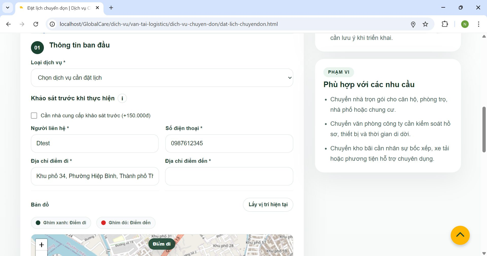
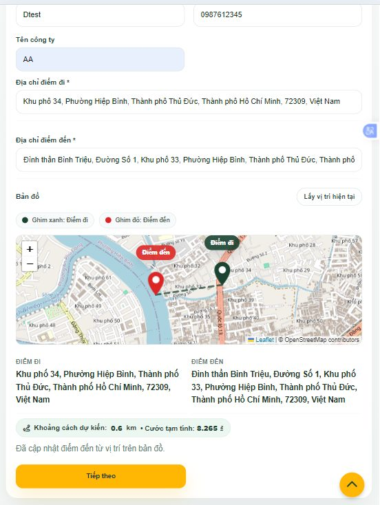
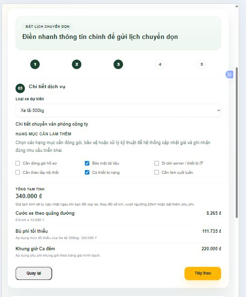
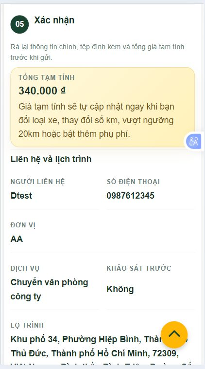
Sau khi gửi yêu cầu thành công, bạn có thể quay lại khu khách hàng để xem tổng quan đơn mới, mở danh sách đơn hàng hoặc đi thẳng vào chi tiết đơn để theo dõi tiến độ chi tiết hơn.
Xem nhanh tổng số yêu cầu, số đơn đang mở, các đơn hoàn thành và vài đơn gần nhất cần theo dõi.
Mở lịch sử tất cả yêu cầu để lọc và tìm lại đúng đơn hàng bạn đang cần xem.
Đây là màn hình đầy đủ nhất: có tiến độ, giá tạm tính, lộ trình, điều kiện tiếp cận, hạng mục đã chọn, ảnh/video khi tạo đơn và báo cáo từ đơn vị thực hiện.
Bạn chỉ còn tự hủy khi đơn chưa bị hủy, chưa được nhận hoặc xử lý, chưa hoàn thành và chưa tới giờ thực hiện.
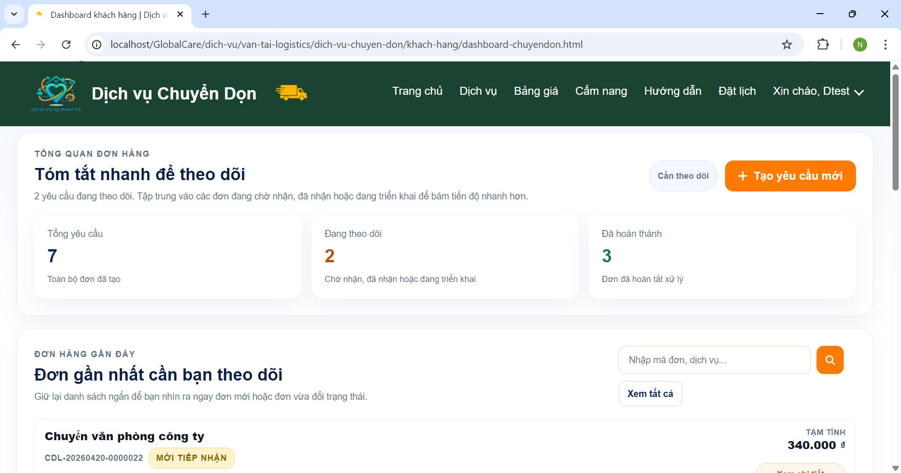
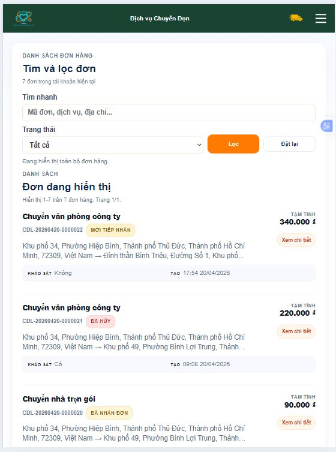
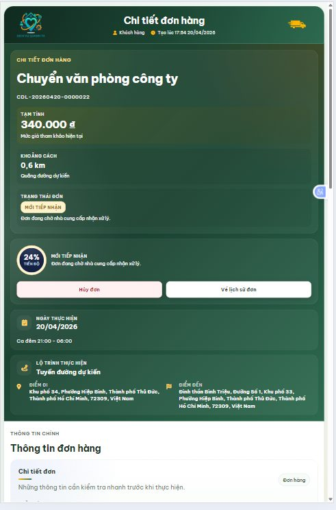
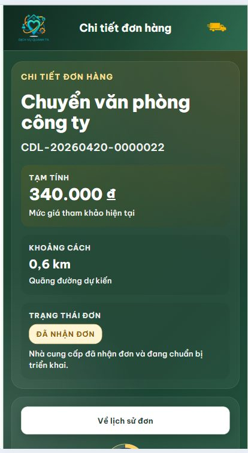
Đây là các nhãn hiển thị phía khách hàng trong quá trình đơn vị thực hiện tiếp nhận và triển khai yêu cầu chuyển dọn của bạn.
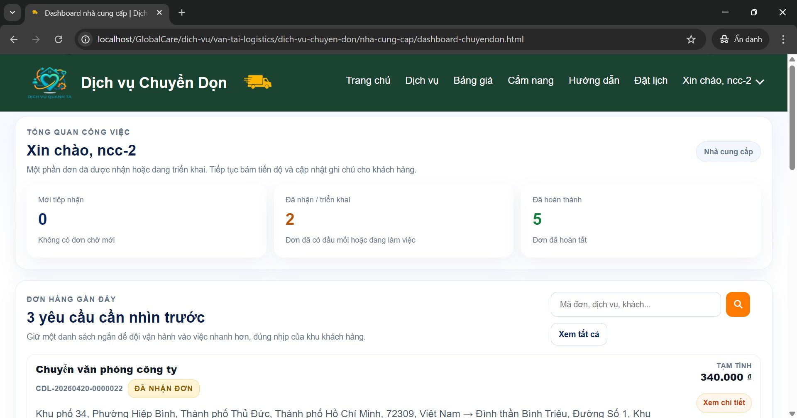
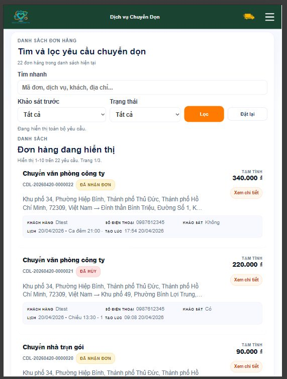
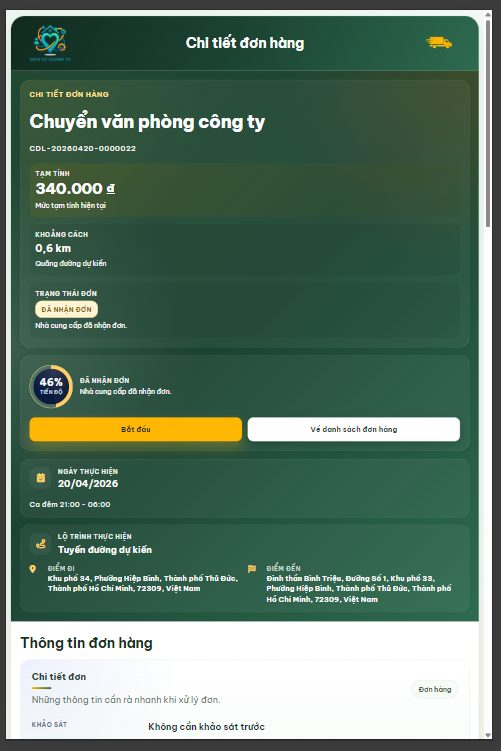
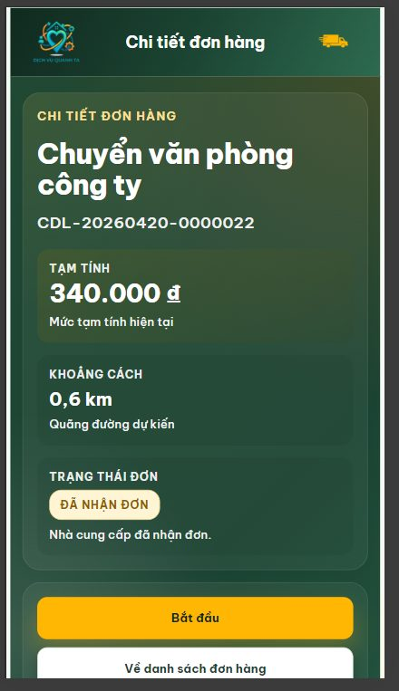
Khi đơn đã ở trạng thái Đã hoàn thành, phần đánh giá của khách hàng mới được mở. Trước thời điểm đó, bạn chỉ theo dõi tiến độ và các báo cáo từ đơn vị thực hiện.
Bạn có thể chấm từ 1 đến 5 sao ngay trên chi tiết đơn hàng sau khi đơn hoàn tất.
Có thể ghi lại trải nghiệm, góp ý chất lượng phục vụ hoặc mô tả thêm các phát sinh của đơn hàng.
Nếu cần minh họa rõ hơn, bạn có thể tải thêm ảnh hoặc video hiện trường ở phần phản hồi khách hàng.
Hệ thống lưu lại số sao, phản hồi và media đánh giá ngay trong chi tiết đơn để bạn xem lại bất cứ lúc nào.